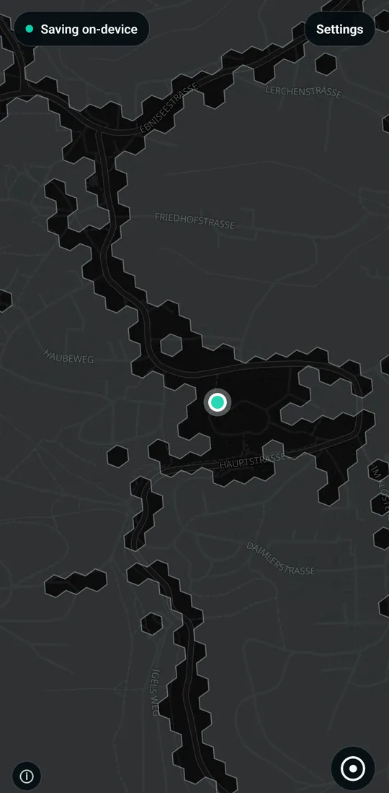
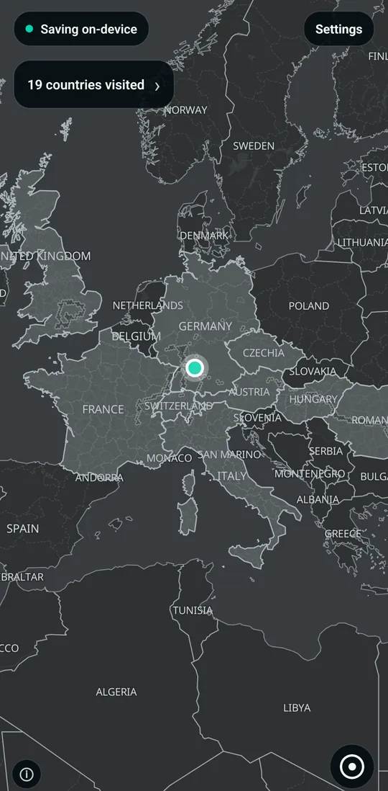
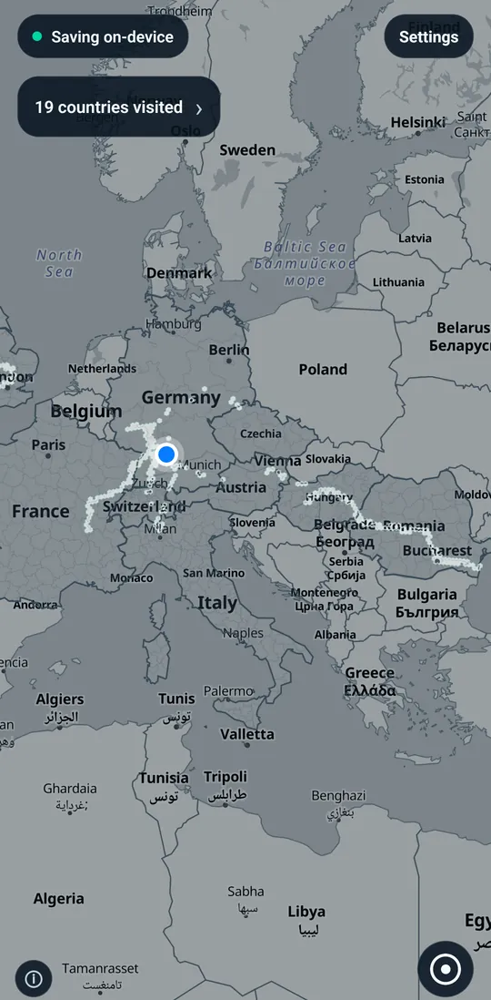
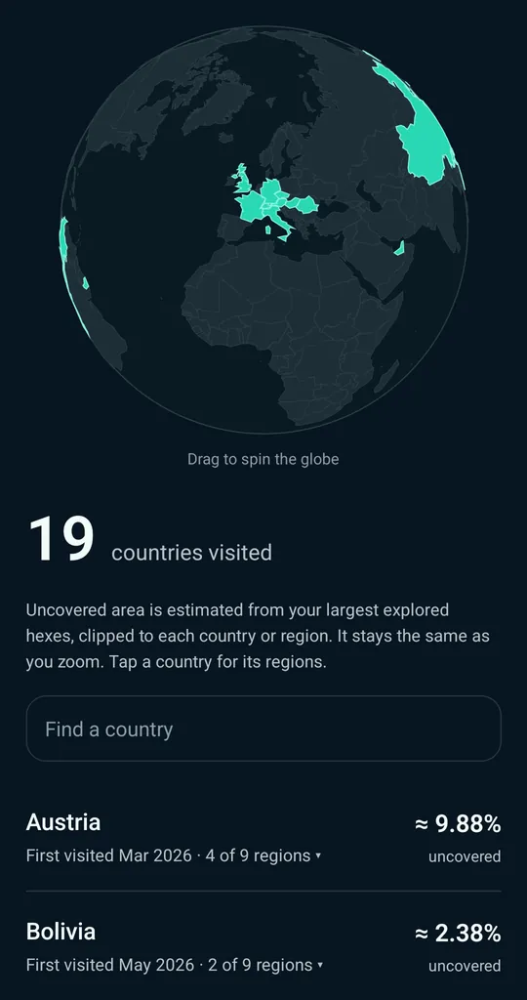
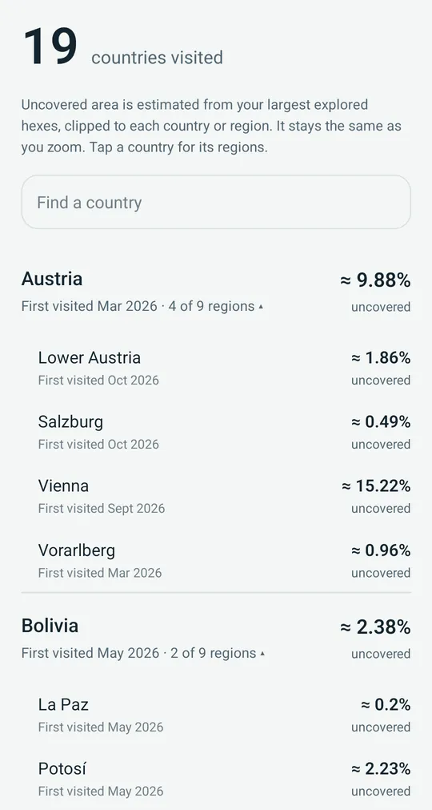
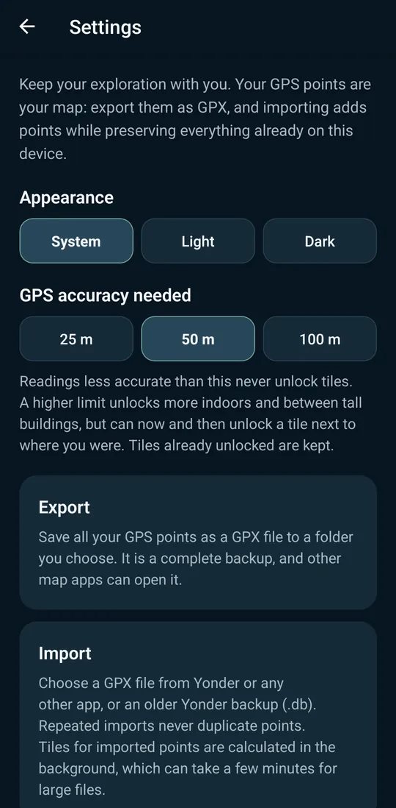

A private coverage map for Android
Unveil your world
Yonder remembers where your phone has been. Every street you take unlocks the hexagons it passes through, and the rest of the map stays veiled until you go there. Your location history never leaves the device.
Free and open source. No account, no server, no analytics.

Zoom out
Watch it add up
Each hexagon is about 50 metres across. Zoomed out, they merge into larger ones, and the countries and regions you have been to are tinted, so a weekend trip and years of commuting show up on the same map.
Only readings accurate enough unlock anything. You choose how accurate: 25, 50 or 100 metres.


Countries and regions
How much have you actually seen?
A globe and a list of every country you have visited, with the month you first went there and roughly how much of it you have uncovered. Tap a country for its regions.
Spoiler: less than you think.


Private by design
Your map stays yours
- Everything stays on the phone. There is no account, no server and no analytics, and Yonder never uploads a location.
- The map itself comes from OpenFreeMap. As with any map app, the tiles it loads show which area you are looking at. Without a connection, Yonder falls back to bundled country borders.
- Your GPS points are your backup. Export them as GPX, or on Android let Yonder save them to a folder you choose, hourly to weekly. Import GPX from Yonder or any other app; importing twice never duplicates anything.
- Diagnostics without locations. An on-device log shows how tracking behaved, and never contains where you were.

Get it
Install Yonder
Android
Yonder is not in the Play Store. Signed builds are published on GitHub, and Obtainium keeps them up to date:
- Install Obtainium.
- Add the app with the source URL
https://github.com/TimmyKug/go-yonder. - Turn on Include prereleases to get beta builds too. New features land there first, and updates keep your data.
Background tracking needs location access “all the time”. Android shows a notification while Yonder is recording.
iPhone
There is no App Store build. Yonder runs on iOS, but for now you need a Mac with Xcode to build and install it yourself.